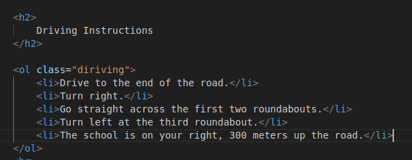
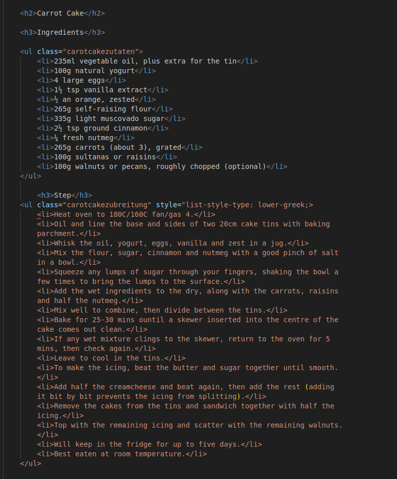

uib-04
Anweisungen
- Arbeite in der Datei "index.html", die in diesem Repository bereitgestellt wird
- Erstelle eine Überschrift ersten Ranges für die gesamte Seite Listmania
- Verwende Kommentare in deinem Markup, um die Listen zu spezifizieren
- Verwende class oder id nach Bedarf
Listmania
Teil 1 - Driving Instructions
- Erstelle ein Element h2 mit dem Inhalt "Driving Instructions".
- Schreibe die Anweisungen aus der Datei lists.txt in eine geordnete Liste um
- Umschließe jede einzelne Anweisung mit einem li-Tag
Lösung:
Teil 2 - Shopping list
- Erstelle ein Element "h2" mit dem Inhalt "Shopping list".
- Erstelle in einer ungeordneten Liste eine Einkaufsliste mit mindestens fünf Artikeln
- Ändere den list-style-type in circle.
- Mache zwei der Punkte zu Links, die den Benutzer zu einem Bild des gewählten Artikels führen
- Die Links sollten in einem neuen Tab geöffnet werden
Lösung:

Teil 3 - Carrot Cake
- Erstelle ein Element "h2" mit dem Inhalt "Carrot Cake".
- Erstelle ein Element "h3" mit dem Inhalt "Ingredients".
- Die Zutaten aus der Datei "lists.txt" sollten in einer ungeordneten Liste stehen.
- Danach sollte ein weiteres "h3" mit dem Inhalt "Steps" folgen.
- Unterhalb von "Steps", füge die Schritte aus der Datei "lists.txt" in einer geordneten Liste hinzu.
- Ändere den list-style-type so, wie du willst
Lösung:
Zur Aufgabe uib-05 hier